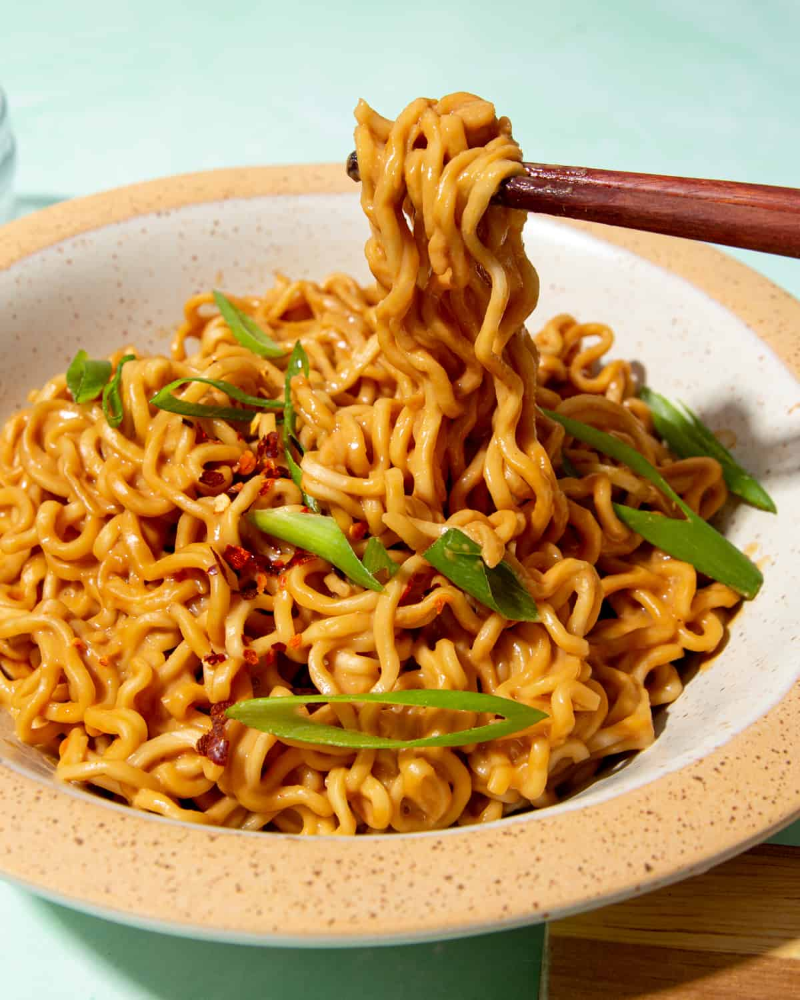

Peanut Butter Noodles

Description
This spicy peanut butter noodles recipe is the perfect meal, doesn't matter if you have a family of five to feed, or if you
are broke college student in need of cheap food. This fantastic quick, easy and budget-friendly recipe will forever be your
go-to food.
Ingredients
- 2 packets instant udon noodles
- 2 tbsp peanut butter
- 1.5 tbsp soy sauce
- 1.5 ts sugar
- 1 ts chilli flakes
- 1 clove minced garlic
- 2 ts sesame oil
- toppings of your choosing, such as green onions and chopped peanuts
Steps
- Start by boiling a pot of water while you prepare the sauce.
- Mix in a medium sized bowl all of the ingredients until you receive a paste.
- Cook the noodles in the pot for one minute, and before straining take 1/4 cup of the noodles water.
- In small portions, add the water to your sauce and mix.
- Combine the noodles and sauce, and serve with your chosen toppings.